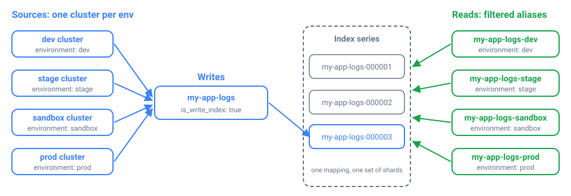

AI TL;DR
Too lazy to read? Summarize this post with:
AI TL;DR
Too lazy to read? Summarize this post with:
Blog Post Publish Date: 2026/11/11
Avoiding Over-Sharding in OpenSearch with Filtered Aliases per Environment#
This blog post covers one of the strategies I use to avoid over-sharding in OpenSearch. Instead of per-environment indexes, I write all logs into one index series and expose each environment as a filtered alias. The rule behind it is simple: the environment is an attribute of each document, so it belongs in a field, not in the index name. The cluster keeps fewer, fuller shards and one mapping, and OpenSearch Dashboards users still get a per-environment view that behaves like a dedicated index.
Too Many Small Shards: The Problem With Per-Environment Indexes#
The instinct is to give every environment its own index, and I used to do exactly that:
my-app-logs-dev
my-app-logs-stage
my-app-logs-sandbox
my-app-logs-prod
...
It looks tidy, but it scales badly. Every index has a footprint, even an empty one. Each shard is a Lucene index. It uses heap and file handles and takes up space in the cluster state. A dev environment that gets a trickle of logs still gets the shard count your template sets, so a 50 MB index can end up split into several half-empty shards. Multiply that by every environment and every log type, and the cluster carries hundreds of nearly empty shards for no benefit. That is over-sharding.
Small shards also cause the problem I described in my post about shard allocation and disk watermarks. The default allocator balances shards by count, not by size. In a cluster with many small, granular indexes, one node can hold dozens of tiny shards and use very little disk, while another holds a few large shards and is almost full. The shard distribution looks balanced, but disk usage tells a different story, and the disk watermarks end up doing the balancing work. Per-environment indexes are an easy way to end up there, so they are one of the first things I avoid when I design index templates.
Splitting the data also makes it harder to query. To look at all environments, or a subset of them, someone has to know which indexes exist and target them with wildcards or comma-separated lists.
The data has the same shape in every environment: the same application’s logs, coming from a different cluster. That makes the environment an attribute of each record, so I model it as a field. It looks like a minor decision, but it saves a lot of operational work later.
How Filtered Aliases Split One Index by Environment#
A filtered alias is an alias with a query filter attached. According to the OpenSearch documentation, the filter applies to every search, count, and delete-by-query call that goes through the alias. For example, my-app-logs-prod points at the my-app-logs indexes with a filter of environment: prod. A query on my-app-logs-prod returns only production documents, even though all environments share the same indexes.

An alias doesn’t copy data or add shards. The cluster holds one index series and a handful of alias definitions.
Defining the Aliases in an Index Template#
An index template is a set of settings, mappings, and aliases that OpenSearch applies to every new index whose name matches its pattern. The aliases belong in the index template, not in a one-off _aliases call. An alias added through the API attaches only to the indexes that exist at that moment, even with a wildcard pattern. Indexes created later are not added. With the aliases in the template, every new index in the series carries them from the start:
PUT _index_template/my-app-logs
{
"index_patterns": ["my-app-logs*"],
"template": {
"settings": {
"index.number_of_shards": "4",
"index.number_of_replicas": "1",
"index.refresh_interval": "10s",
"index.routing.allocation.require.temp": "hot",
"plugins.index_state_management.rollover_alias": "my-app-logs"
},
"aliases": {
"my-app-logs-dev": {
"is_write_index": false,
"filter": { "term": { "environment": "dev" } }
},
"my-app-logs-stage": {
"is_write_index": false,
"filter": { "term": { "environment": "stage" } }
},
"my-app-logs-sandbox": {
"is_write_index": false,
"filter": { "term": { "environment": "sandbox" } }
},
"my-app-logs-prod": {
"is_write_index": false,
"filter": { "term": { "environment": "prod" } }
}
}
},
"composed_of": [
"settings-default",
"default-mappings",
"kubernetes-mappings",
"my-app-logs-mappings"
]
}
Each environment alias pairs is_write_index: false with a term filter. The aliases are read-only views, and nothing writes through them. term is an exact-match query, so my-app-logs-prod resolves to the documents whose environment is exactly prod. For that to work, environment must be mapped as a keyword field in one of the component templates. On an analyzed text field, a term filter can silently miss documents.
The shared settings and mappings come from the component templates listed in composed_of. Because every environment writes into the same indexes, they all get the same field mappings. Two environments can no longer drift apart, which is a common problem when each one has its own index.
Writes go through a single rollover alias, my-app-logs. A rollover alias is the alias that ISM moves to a new index each time the current one gets too big or too old. Here it is set in plugins.index_state_management.rollover_alias and managed by an ISM policy. Create the first index with that alias as the write index, as you would for any rollover setup:
PUT my-app-logs-000001
{
"aliases": {
"my-app-logs": {
"is_write_index": true
}
}
}
The log shipper in each environment’s cluster writes to my-app-logs and sets the environment field from the cluster it runs in. ISM rolls the series over by size or age (my-app-logs-000001, my-app-logs-000002, …). Because the environment aliases live in the template, each new index starts with all of them attached.
Per-Environment Views in OpenSearch Dashboards#
The people reading the logs benefit the most from this pattern. In Dashboards, create one index pattern per environment alias. my-app-logs-prod shows only production logs, and my-app-logs-stage shows only staging. An index pattern of my-app-logs* shows every environment in one place.
To an analyst, my-app-logs-prod looks and behaves like a dedicated production index, with the same fields and search experience, scoped to production. They don’t need to know it is a filtered view. Cross-environment questions such as “show me this error in stage and production” are easy to answer because the data was never split up.
Per-Environment Indexes vs. Filtered Aliases#
Concern |
Per-environment indexes |
Unified index + filtered aliases |
|---|---|---|
Shard and cluster-state footprint |
One or more shards per environment, even tiny ones |
One index’s shards, shared by all environments |
Small environments |
Under-filled shards wasting heap and disk |
No dedicated footprint, just an alias |
Cross-environment queries |
Wildcards or comma lists across many indexes |
One index series, optionally filtered |
Per-environment view |
Natural |
Preserved through the filtered alias |
Mapping consistency |
Can drift between environments |
One shared mapping |
Rollover and ISM |
One rollover series per environment |
One rollover series |
When to Use Separate Indexes Anyway#
A filtered alias is a read convenience over shared storage. When environments need real physical separation, use separate indexes:
Hard isolation and access control. If production and dev must live on different storage tiers, or a user must never be able to touch production shards, an alias filter is not a security boundary. Anyone allowed to read the underlying indexes can query them directly and skip the filter. If you only need to restrict which documents a role can read, the Security plugin’s document-level security does that on a shared index.
Very different retention or sizing. Say production needs 180 days of retention on large shards and dev needs 2 days on small ones. Separate index series with their own ISM policies are cleaner than one policy for everything.
Very different volume. If one environment produces far more data than the others and needs a different shard layout, splitting it out can be justified.
The common case is the same log type coming from several environments with similar retention and mappings. For that, I use this pattern almost by default: one index series, one mapping, one rollover alias, and as many per-environment views as you need.
Key Takeaways#
Model the environment as a field. Every environment’s logs have the same shape, so they belong in the same index series.
One index per environment multiplies under-filled shards, and each one costs heap, file handles, and cluster state even when it holds almost no data.
Fewer, fuller shards keep count-based shard balancing closer to real disk usage, so the disk watermarks have less to correct.
A filtered alias doesn’t copy data. Searches, counts, and delete-by-query through the alias only see documents that match its filter.
Define the environment aliases in the index template. Aliases added with the
_aliasesAPI do not attach to indexes that rollover creates later.Map
environmentas akeywordfield so thetermfilter matches exactly.Write through a single rollover alias managed by ISM, and keep the environment aliases read-only with
is_write_index: false.An alias filter is not a security boundary. Use document-level security to restrict reads, and separate indexes when an environment needs physical isolation, different retention, or a different shard layout.
References#
I’m Carlos Neto, and I’ve been running OpenSearch on EKS for over five years. More about me on my home page. If you have questions or a different approach, contact me on LinkedIn.